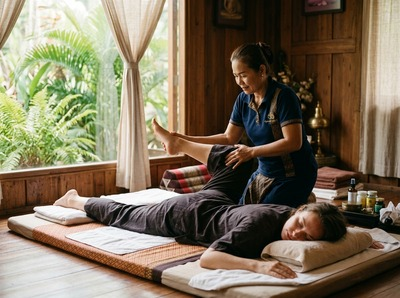

Merchant City is one of Glasgow's most distinctive urban quarters, sitting at the historic heart of the city between George Square and Glasgow Cross.
Thai massage in Merchant City is sought out by the professionals, creatives, and residents who populate this vibrant neighbourhood's converted warehouses, gallery spaces, and period tenements. The area draws a broad mix: office workers from the surrounding legal and finance firms, artists and makers connected to Trongate 103 and the nearby cultural venues, and a growing residential community who have made this regenerated district their home.
Serendipity Massage Therapy & Wellness sits a short walk west of Merchant City on Hope Street. For Merchant City residents, a therapy session at Serendipity fits naturally into an evening or a lunchtime break.
The studio is at Central Chambers, a well-known address on Hope Street in Glasgow's financial district. The journey from Merchant City takes under fifteen minutes on foot through the city centre.

Whether you carry the postural strain of a desk-based day or the stress of a busy urban life, Serendipity's team is trained to address both. Every treatment is delivered by a trained therapist using techniques developed by head therapist Jariya Malone. That means the same quality and care at every visit.
Serendipity offers a full range of massage treatments, each available to book online and suited to different needs and preferences:
You can book your session online and choose the treatment that fits what your body needs right now.
From Merchant City, the most direct route to Serendipity is on foot. Walk west along Ingram Street or Trongate and continue through the city centre. You will reach Hope Street in around ten to twelve minutes.
If you prefer public transport, Buchanan Street subway station is the nearest stop. It is a short walk north on Hope Street from the studio. Several bus routes also connect Merchant City with the city centre, including services along Argyle Street and Trongate.
Serendipity has built its reputation by delivering the same standard of care at every appointment. The team's methods were developed by head therapist Jariya Malone and are taught to every therapist in the practice. Clients return not just for the treatment, but because they know what to expect when they arrive.
That matters most for people who need regular sessions to manage ongoing tension or stress. A single visit can bring real relief. Returning regularly is how lasting change happens. Book a session at Serendipity and experience the difference a properly trained team makes.
Merchant City takes its name from the tobacco lords and traders who built their homes and warehouses here from the 1750s onwards. Its renewal since the 1980s has kept much of that bold character while bringing it back to life.
The eastern edge of the area still follows Glasgow's original medieval street plan. It is a detail worth knowing for anyone curious about the city's history. You can read more at Merchant City on Wikipedia.
Serendipity is at Central Chambers on Hope Street, around ten to twelve minutes on foot from Merchant City. The walk heads west through Glasgow's city centre and is simple at any time of day. If you prefer not to walk, Buchanan Street subway station is just a short distance from the studio.
Walking is the easiest option. Follow Ingram Street or Trongate westward into the city centre. The Glasgow Subway serves Buchanan Street station, which is the closest stop to the studio on Hope Street. Several bus routes along Argyle Street and Trongate also connect the area to the city centre if you would rather travel by bus.
Same-day bookings are available subject to therapist availability. The easiest way to check and secure a slot is through the online booking page, which shows real-time availability. You can also call the studio on 0141 673 6630 if you prefer to speak with someone.
For desk-based professionals with neck, shoulder, or back tension, Traditional Thai Massage is a strong choice. It uses assisted stretching and acupressure to release tight muscles and restore range of motion. No oils are used, making it a practical option before or after a working day.
If stress and mental fatigue are the main concern, Thai Aromatherapy Massage or Swedish Massage offer a gentler, calming option.
Serendipity Massage Therapy & Wellness is open seven days a week to suit the varied schedules of clients across Glasgow, including Merchant City. For current hours and real-time availability, check the booking page or call 0141 673 6630 to speak with the team.